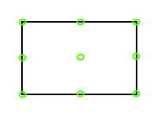

Since version 1.9.2 the ToolPopup can be used without the Shell. The
corresponding properties are documented in the API whether they are
needed for a Shell-use or for the stand-alone-use.
This control
can be used with e.g. a Button that opens the ToolPopup on the
button's press event. To do this, the ToolPopup needs to know which
other control is the corresponding opener that also indicates the
ToolPopup's position. Without an opener the ToolPopup can't be
positioned.
Since version 1.18.6 the Toolpopup will close
itself if the opener of the ToolPopup? is removed instead of trying to
position itself relatively to the non-existing opener element.
Detailed information about properties etc. can be found in the API documentation
The open ToolPopup can be placed at different positions around any possible control. It can be positioned left, right, above and below the opening control. There are two ways to set the ToolPopup's position (Corresponding examples can be found below):
Each control has 9 docking points. Each point can be accessed via a
combined parameter. Possible values are: left, begin, center, right,
end, top and bottom. So a single docking point is for instance called
'TopLeft'. 
A list of
all possible parameters can be found under Popup.Dock.
The main difference between 'Left' and 'Begin' is that 'Begin' is
RTL-mode save. The same applies to 'Right' and 'End'.
The 'open'-method of the ToolPopup requires two of these parameters. There are two possible parameters to set the ToolPopup in relation to the opener's position. One is the so called 'my'-parameter and the other is called 'at'-parameter. 'My' specifies which docking point of the opening ToolPopup should be used to calculate its position. 'At' defines which docking point should be used where the ToolPopup should be added to.
To set the position correctly it has to be considered which docking point of 'my' is set to which point of 'at'. The following example is taken from jQueryUI (jQueryUI position)that shows how these combinations work. SAPUI5 introduced additionally 'end' and 'begin' as possible parameters. These ensure that the corresponding docking points are RTL-mode save. This means that e.g. 'begin top' accords to 'left top'. In RTL-mode this accords to 'right top'. This ensures that a once set ToolPopup stays at the corresponding docking point. Any combination with 'left' or 'right' will look strangely in RTL-mode.
Since version 1.13.1 the arrow will always point to the middle of the opener. That holds true for the direction of the arrow as well as (for larger ToolPopup) for the position on the ToolPopup border. In example 1 you can see the default position for the arrow, example 2 shows for instance what happens if you use the 'my'-parameter with a combination of begin and center.
Since version 1.13.1 the ToolPopup is able to react on any collisions that might occur. Therefore the ToolPopup was enabled to react on this feature and repositions its arrow according to the set collision type (that was maybe set via 'setPosition()').
|
position...
my:
at:
offset:
collision:
|
||
This example shows a ToolPopup that uses the ToolPopup's way to set the default position
This example shows a ToolPopup that uses my = end center, at = begin center
This example shows a ToolPopup below the button
This example shows a ToolPopup left of the button
This example shows a ToolPopup above the button
This example shows a ToolPopup above the button with my = right bottom, at = center top